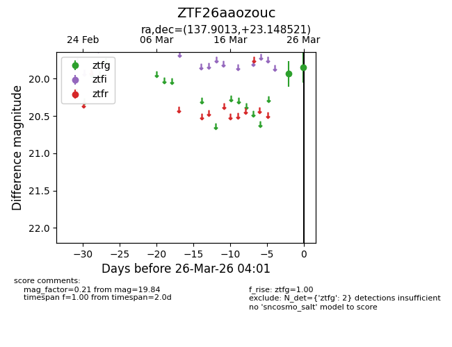
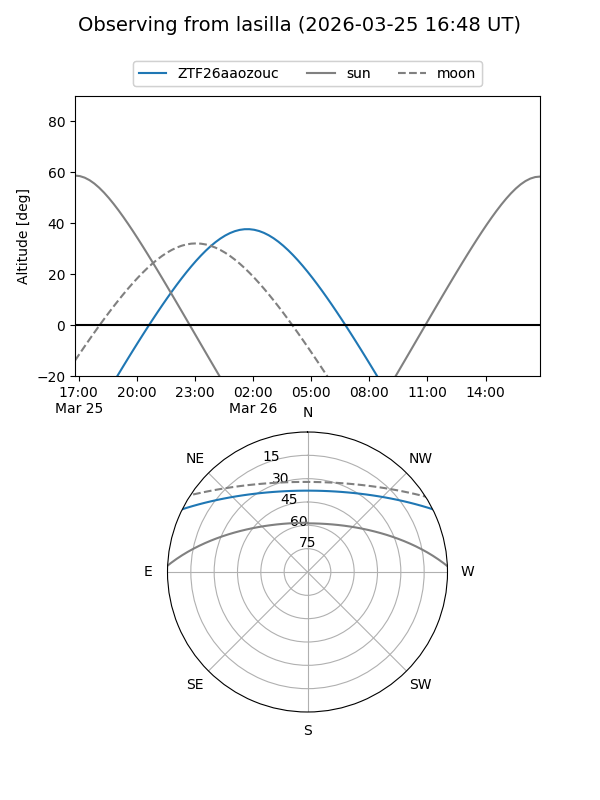
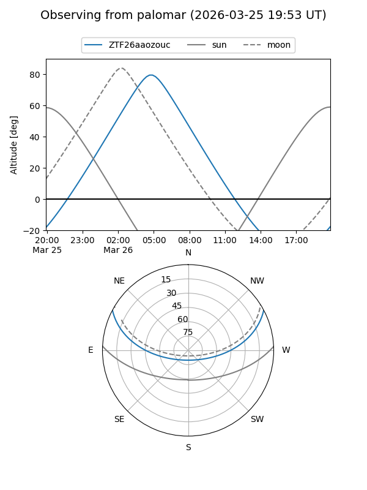
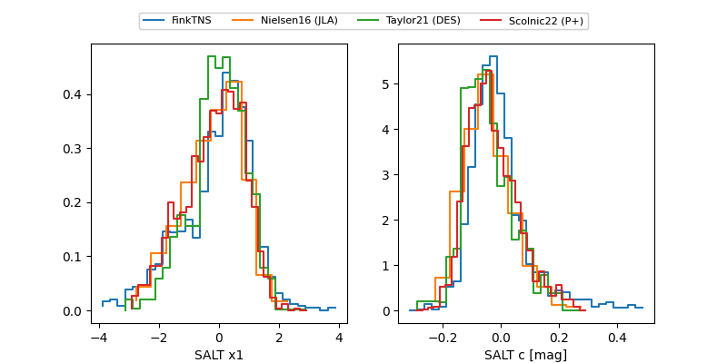

ZTF26aaozouc
Target ZTF26aaozouc at 2026-03-26 04:04
Aliases and brokers:
FINK: link
Lasair: link
ALeRCE: link
alt names
ZTF26aaozouc (ztf,fink_ztf)
Coordinates:
equatorial (ra, dec) = 137.9013,+23.14852
equatorial (HMS+DMS) = 09:11:36.31,+23:08:54.68
galactic (l, b) = (204.6834,+40.47536)
Flags:
Photometry:
last ztfg=19.84
2 ztfg detections
Lightcurve

Visibility


Additional plots
